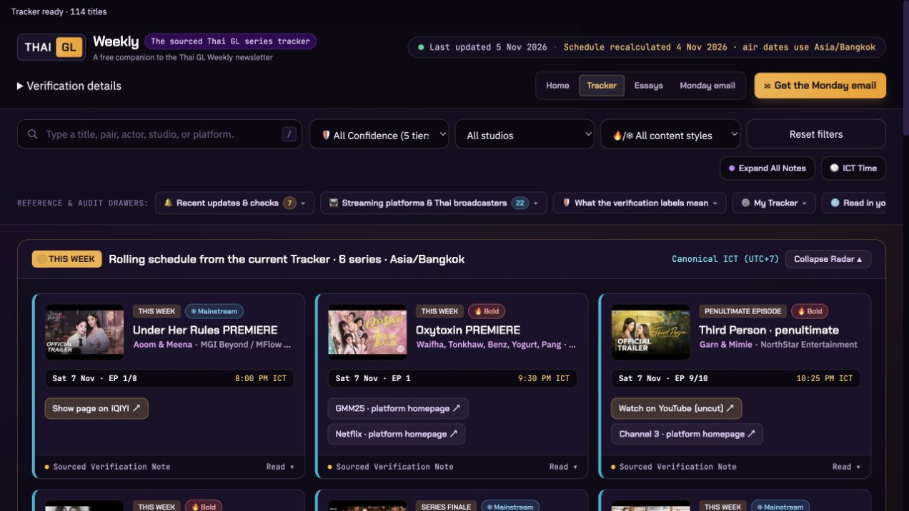

Find your corner
Search by title, pair or actor. Filter by studio, content style or confidence, and browse ten shelves.
Free with the Monday newsletter
Find your favourite pair. Choose a studio. See the week ahead, save your shows and follow your episodes in the sourced Thai GL Tracker.
Confirm your newsletter email to unlock the full Tracker. No payment required.

Search by title, pair or actor. Filter by studio, content style or confidence, and browse ten shelves.
Save a list, choose Watching, and count your episodes. Your list and progress stay in this browser.
Bangkok and local times, viewing links and eight interface languages, including English. Additional languages use automatic translation.
Returning readers welcome
Use the same email address as your confirmed Monday newsletter subscription. On your first visit, choose Sign up in the email-verification window; on later visits choose Sign in. No password is required. We’ll then check your newsletter subscription. Existing active newsletter readers do not need to subscribe again.
Just joined? Click the confirmation link in your newsletter email first. Check Spam or Junk if it hasn’t arrived, then return here and check access again. Signing in verifies your email; it does not subscribe you or change your newsletter choices.
Saved a list before? Use the same browser to keep it. Access on another device won’t copy your saved list.